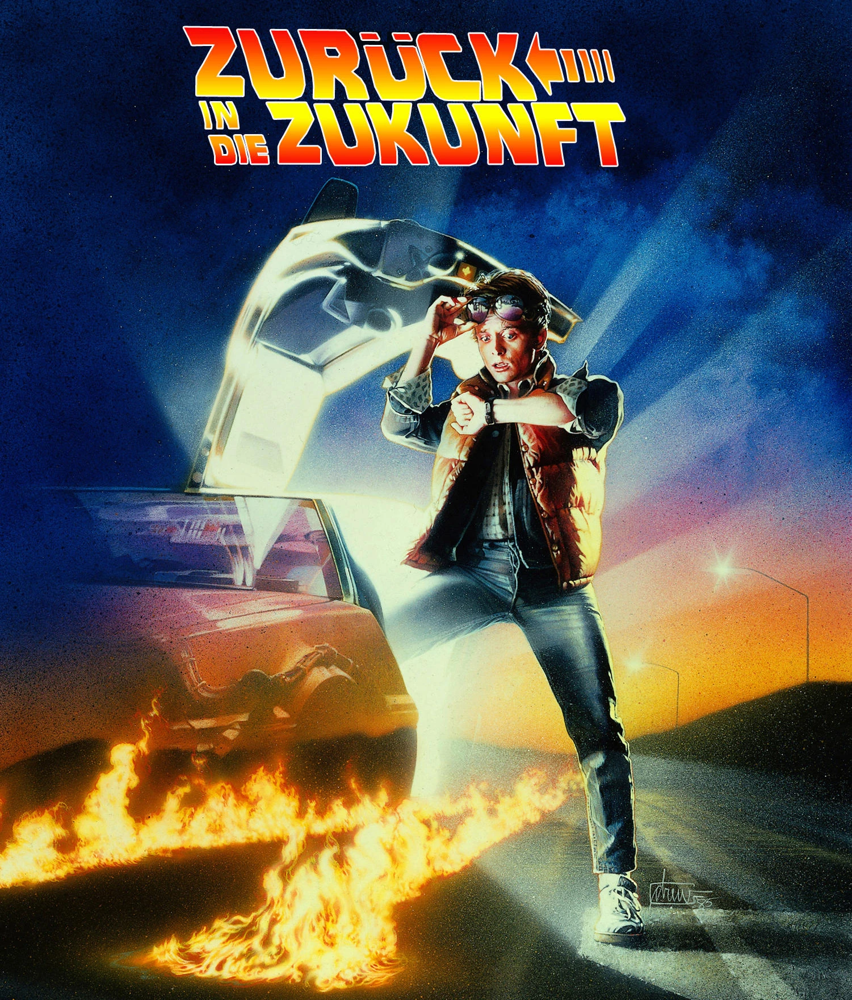
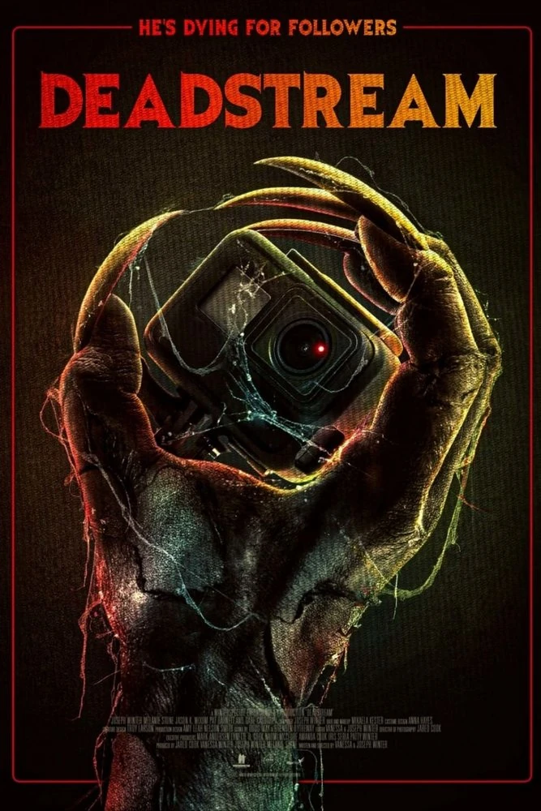
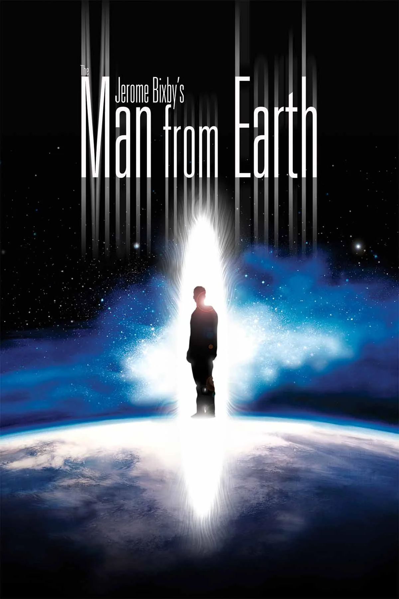

Alle Reviews
7 Reviews
Das kostbarste aller Güter
2024 · Regie: Michel Hazanavicius
Ein Säugling, ein Holzfällerpaar und ein Zug nach Auschwitz. Michel Hazanavicius erzählt mit der Schlichtheit eines Märchens von Hass, dessen Überwindung und dem Wert eines einzelnen Lebens. Ein kleiner Film, der viel mehr Aufmerksamkeit verdient.

The Furious
2025 · Regie: Kenji Tanigaki
Spätvorstellung, und ich war hellwach. Die bestchoreografierte Action seit The Raid, eine Kamera, die nie die Orientierung verliert, und ein Brian Le, der allen die Show stiehlt.

Verliebt und ausgeflippt
2010 · Regie: Rob Reiner
Zwei Kinder, sechs Jahre und dieselbe Geschichte aus zwei Blickwinkeln erzählt. Ein kleiner, unspektakulärer Film, der mich härter getroffen hat als fast alles andere dieses Jahr.

Strafpark
1971 · Regie: Peter Watkins
Zufallsfund aus der Bibliothek und neuer Lieblingsfilm. Eine fiktive Dystopie, die Peter Watkins so pseudo-dokumentarisch inszeniert, dass man beim Gucken an ihr zweifelt.

Zurück in die Zukunft
1985 · Regie: Robert Zemeckis
Marty McFly reist versehentlich in die Vergangenheit und muss dort um seine eigene Existenz kämpfen.

Deadstream
2022 · Regie: Joseph und Vanessa Winter
Ein gecancelter YouTuber sperrt sich freiwillig über Nacht in ein Spukhaus ein und streamt das Ganze live. Klingt nach einer dummen Idee? Ist es auch. Und genau deshalb funktioniert es so gut.

The Man from Earth
2007 · Regie: Richard Schenkman
Ein Film, der beweist, dass man weder Budget noch Spezialeffekte braucht, um den Zuschauer 87 Minuten lang in Atem zu halten. Alles, was es braucht, ist eine einzige Frage und den Mut, sie ernst zu nehmen.